Towards Ball Spin and Trajectory Analysis in Table Tennis Broadcast Videos via Physically Grounded Synthetic-to-Real Transfer基于物理的合成到真实迁移：面向乒乓球转播视频的旋转与轨迹分析
Abstract摘要
Analyzing a player’s technique in table tennis requires knowledge of the ball’s 3D trajectory and spin.
分析乒乓球运动员的技术需要了解球的 3D 轨迹和旋转。
While, the spin is not directly observable in standard broadcasting videos, we show that it can be inferred from the ball’s trajectory in the video.
虽然在标准转播视频中无法直接观察到旋转，但我们表明可以从视频中球的轨迹推断出旋转。
We present a novel method to infer the initial spin and 3D trajectory from the corresponding 2D trajectory in a video.
我们提出了一种从视频中相应的 2D 轨迹推断初始旋转和 3D 轨迹的新颖方法。
Without ground truth labels for broadcast videos, we train a neural network solely on synthetic data.
由于没有转播视频的真值标签，我们仅根据合成数据训练神经网络。
Due to the choice of our input data representation, physically correct synthetic training data, and using targeted augmentations, the network naturally generalizes to real data.
由于我们选择了输入数据表示、物理上正确的合成训练数据以及使用有针对性的增强，网络自然地推广到真实数据。
Notably, these simple techniques are sufficient to achieve generalization.
值得注意的是，这些简单的技术足以实现泛化。
No real data at all is required for training.
训练根本不需要真实数据。
To the best of our knowledge, we are the first to present a method for spin and trajectory prediction in simple monocular broadcast videos, achieving an accuracy of in spin classification and a 2D reprojection error of of the image diagonal.
据我们所知，我们是第一个提出一种在简单的单目转播视频中进行旋转和轨迹预测的方法，在旋转分类中实现了的精度，以及图像对角线的的2D重投影误差。
1 Introduction1 简介
Computer vision is widely used across various sports to enhance athlete performance, analyze opponents’ strategies [ 37 , 29 ] , and assist referees with automated decision-making such as goal-line technology in soccer or line-calling in tennis [ 21 , 44 ] .
计算机视觉广泛用于体育运动，包括提升运动员表现、分析对手战术 [37, 29]，以及辅助裁判自动判罚，例如足球门线技术和网球界内外判定 [21, 44]。
Additionally, it provides valuable insights for sports broadcasting.
此外，它还为体育转播提供了宝贵的见解。
While player movement analysis is crucial in many sports, table tennis can rely mostly on ball trajectories.
虽然球员动作分析在许多运动中都至关重要，但乒乓球运动主要依赖于球的轨迹。
Notably, spin plays a key role in understanding gameplay, making its estimation essential for detailed performance analysis.
值得注意的是，旋转在理解比赛过程方面发挥着关键作用，因此其估计对于详细的性能分析至关重要。
This work especially focuses on predicting ball spin besides its 3D trajectory from standard table tennis broadcast videos.
这项工作特别关注除了标准乒乓球转播视频的 3D 轨迹外，还预测球的旋转。
We propose a learning-based method to estimate the ball’s spin and 3D trajectory, enabling a comprehensive analysis of its kinematics.
我们提出了一种基于学习的方法来估计球的旋转和 3D 轨迹，从而能够对其运动学进行全面分析。
Broadcast video analysis is challenging due to low frame rates, small ball size, and motion blur.
由于帧速率低、球尺寸小和运动模糊，转播视频分析具有挑战性。
Since no public ground truth exists, we train our model exclusively on synthetic data.
由于不存在公共真值，我们仅在合成数据上训练我们的模型。
Instead of using raw visual data, we extract the ball’s and table’s 2D positions in the video frames, providing an abstract yet effective game-state representation.
我们不使用原始视觉数据，而是提取视频帧中球和球台的 2D 位置，提供抽象但有效的比赛状态表示。
This representation in addition to physically correct synthetic data and targeted augmentations enables our model to generalize to real data.
除了物理上正确的合成数据和有针对性的增强之外，这种表示使我们的模型能够推广到真实数据。
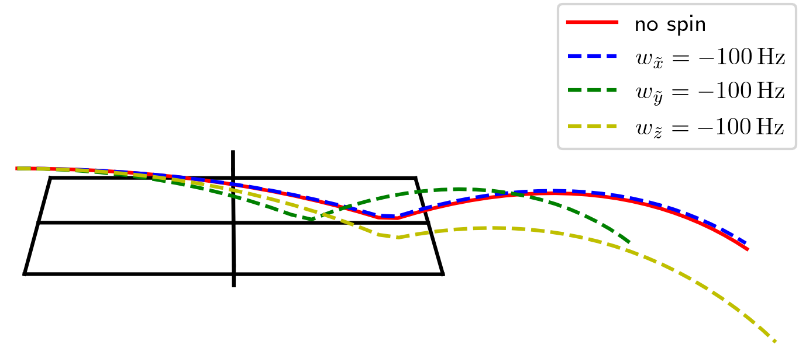
Figure 1 : Simulated trajectory of the ball in the image plane under the influence of different spin components , , and .
图1：不同旋转分量影响下的球在图像平面中的模拟轨迹、和。
Our main contributions are:
我们的主要贡献是：
- •
Spin & trajectory estimation : We introduce a novel approach for analyzing table tennis gameplay by predicting ball spin and 3D trajectory.
旋转和轨迹估计：我们引入了一种通过预测球旋转和 3D 轨迹来分析乒乓球比赛的新颖方法。
To our knowledge, this is the first spin estimation method applicable to standard monocular broadcast videos.
据我们所知，这是第一个适用于标准单目转播视频的旋转估计方法。
- •
Synthetic-to-real generalization : Our model generalizes to real-world data despite being trained solely on synthetic data.
合成到真实的泛化：尽管我们的模型仅针对合成数据进行训练，但仍可泛化到现实世界的数据。
Three simple techniques are sufficient to achieve excellent generalization: Using a smart input representation, utilizing a physics-based simulation for the synthetic data, and implementing suitable augmentations.
三种简单的技术足以实现出色的泛化：使用智能输入表示、对合成数据利用基于物理的模拟以及实现适当的增强。
- •
Synthetic train data & simulation pipeline : We generate a large dataset of synthetic trajectories and publish both the dataset and simulation pipeline.
合成训练数据与仿真流程：我们生成大规模合成轨迹数据集，并公开数据集及仿真流程。
- •
Annotated real-world test data : We have manually annotated broadcast videos to evaluate real-world generalization.
带标注的真实世界测试数据：我们手动标注了转播视频来评估真实世界的泛化能力。
We make this dataset publicly available.
我们公开该数据集。
2 Related Work2 相关工作
3D Trajectory Estimation3D 轨迹估计
Ball trajectory analysis is crucial across various sports, with many methods relying on expensive multi-camera setups for triangulation [ 31 , 34 , 36 , 45 ] .
球轨迹分析对于各种运动都至关重要，许多方法依赖于昂贵的多摄像机设置进行三角测量[31,34,36,45]。
While highly accurate, this is costly and the data is often inaccessible.
虽然高度准确，但成本高昂，而且数据通常无法访问。
In contrast, we focus on monocular broadcast videos, making our method widely applicable.
相比之下，我们专注于单目转播视频，使得我们的方法具有广泛的适用性。
Some works estimate a ball’s 3D position in individual frames using observed size or height cues [ 42 , 6 , 25 ] .
一些作品使用观察到的大小或高度线索来估计球在各个帧中的 3D 位置 [42,6,25]。
[ 7 ] applies this to table tennis but requires extremely high-frame-rate footage.
[7]将此应用于乒乓球，但需要极高的帧速率素材。
In total, single-frame visual cues are generally insufficient for a precise localization.
总的来说，单帧视觉线索通常不足以实现精确定位。
Instead, we uplift 2D detections over time to infer the full 3D trajectory.
相反，我们会随着时间的推移提升 2D 检测以推断完整的 3D 轨迹。
Several methods fit physical models to observed 2D trajectories for 3D estimation in sports like badminton [ 27 ] , volleyball [ 22 ] , and basketball [ 8 ] .
有几种方法将物理模型拟合到观察到的 2D 轨迹，以便在羽毛球 [27]、排球 [22] 和篮球 [8] 等运动中进行 3D 估计。
These typically require camera calibration and estimated turning points, which can introduce errors.
这些通常需要相机标定和估计转折点，这可能会引入误差。
Rather than performing an optimization for each trajectory, we train a neural network once to directly predict the 3D trajectory in an end-to-end approach, improving stability by performing camera calibration only indirectly and eliminating turning point estimates.
我们没有对每个轨迹进行优化，而是训练神经网络一次，以端到端的方法直接预测 3D 轨迹，通过仅间接执行相机标定并消除转折点估计来提高稳定性。
Deep learning enables direct 2D-to-3D mapping.
深度学习可实现直接 2D 到 3D 映射。
Similar to our work, [ 13 ] uses synthetic 2D trajectories for training, predicting the initial 3D position of a tennis ball before applying a physics model.
与我们的工作类似，[13] 使用合成 2D 轨迹进行训练，在应用物理模型之前预测网球的初始 3D 位置。
However, their approach overlooks ball spin and complex interactions like bouncing and the Magnus effect.
然而，他们的方法忽略了球的旋转和复杂的相互作用，如弹跳和马格努斯效应。
In contrast, our physics simulation provides more realistic training data, and we predict the full 3D trajectory instead of the initial conditions to avoid cumulative errors in motion equation solutions.
相比之下，我们的物理模拟提供了更真实的训练数据，并且我们预测完整的 3D 轨迹而不是初始条件，以避免运动方程解中的累积误差。
Spin Estimation旋转估计
While spin is crucial in table tennis, it is not directly observable in standard broadcasts.
虽然旋转对于乒乓球至关重要，但在标准转播中无法直接观察到。
To our knowledge, we present the first method for spin estimation from monocular broadcast videos.
据我们所知，我们提出了第一种从单目转播视频进行旋转估计的方法。
Existing approaches often rely on specialized hardware: Event cameras [ 18 , 33 ] , high-speed cameras detecting ball markings [ 17 ] , or multi-camera setups recognizing logos [ 48 ] .
现有方法通常依赖于专用硬件：事件摄像机 [18, 33]、检测球标记的高速摄像机 [17] 或多摄像机设置识别徽标 [48]。
While effective, these methods require controlled environments or ball modifications, making them impractical for real-world broadcast analysis.
这些方法虽然有效，但需要受控环境或球修改，这使得它们对于现实世界的转播分析来说不切实际。
Our method overcomes these limitations by estimating spin from standard video footage without additional equipment.
我们的方法通过在无需额外设备的情况下根据标准视频片段估计旋转来克服这些限制。
Physics in Computer Vision计算机视觉中的物理学
Previous works have e.g. used physics-based losses for 3D localization [ 25 ] , simulated ball trajectories for trajectory completion [ 2 ] , and physical models to estimate landing positions in golf [ 32 ] .
以前的作品有例如使用基于物理的损失进行 3D 定位 [25]，使用模拟球轨迹完成轨迹 [2]，并使用物理模型来估计高尔夫中的着陆位置 [32]。
In table tennis, [ 9 ] applies physics-informed neural networks (PINNs) [ 35 ] to multi-camera 3D trajectory data to extract ball motion properties, and [ 46 , 41 ] predict the future trajectory based on previous 3D measurements.
在乒乓球运动中，[9] 将物理信息神经网络 (PINN) [35] 应用到多摄像机 3D 轨迹数据以提取球运动属性，并 [46, 41] 根据之前的 3D 测量预测未来轨迹。
Moreover, [ 10 ] trains a robotic player entirely on synthetic data.
此外，[10]完全根据合成数据训练机器人球员。
Our approach leverages the physical simulation environment from [ 10 ] to generate synthetic data, enabling our model to generalize to real-world broadcast videos.
我们的方法利用[10]中的物理模拟环境来生成合成数据，使我们的模型能够推广到现实世界的转播视频。
Figure 2 : Overview of our pipeline.
图 2：我们的流程概览。
For each time step , ball coordinates and table keypoints are embedded to generate location tokens .
对于每个时间步，嵌入球坐标和球台关键点以生成位置 token。
A learnable spin token is prepended, and the SPT processes the sequence .
前置一个可学习的旋转 token，SPT 处理序列。
The SPT predicts the initial spin at and the sequence of 3D ball positions .
SPT 预测处的初始旋转以及3D 球位置的顺序。
The predicted spin and trajectory are supervised using separate loss terms, ensuring accurate learning of both components.
预测的旋转和轨迹使用单独的损失项进行监督，确保两个组件的准确学习。
3 Problem Description3 问题描述
To effectively analyze a player’s technique in table tennis, it is essential to understand the ball’s trajectory and the initial spin imparted upon contact with the paddle.
为了有效地分析乒乓球运动员的技术，必须了解球的轨迹以及与球拍接触时产生的初始旋转。
This section first outlines the setup of our method and discusses the key design choices.
本节首先概述我们的方法的设置并讨论关键的设计选择。
We then introduce appropriate coordinate systems for analyzing both trajectory and spin.
然后，我们引入适当的坐标系来分析轨迹和旋转。
Finally, we examine how spin influences the trajectory and identify which spin components can be accurately observed.
最后，我们研究旋转如何影响轨迹，并确定可以准确观察哪些旋转分量。
3.1 Main Goal3.1 主要目标
We define the ball’s 3D position at each video frame at time as .
我们将时间的每个视频帧处的球的3D位置定义为。
Similarly, we denote the ball’s initial spin as .
同样，我们将球的初始旋转表示为。
Our model predicts both for each and once for the full trajectory.
模型在每个 时刻预测位置 ，并为整条轨迹预测一次初始旋转 。
The input to our model consists of the observed 2D pixel coordinates of the ball for each time .
模型输入为每个时刻 观测到的球的二维像素坐标。
We employ an end-to-end approach that does not require additional information such as camera calibration.
我们采用端到端方法，不需要相机标定等额外信息。
To facilitate this, we also extract the 2D image coordinates of 13 key table points per frame, since they contain valuable information about the orientation of the camera.
为了实现这一点，我们还提取每帧 13 个球台关键点的 2D 图像坐标，因为它们包含有关相机方向的有价值的信息。
Thus, the input to our model comprises the ball’s 2D trajectory along with the 2D positions of these table points.
因此，我们模型的输入包括球的 2D 轨迹以及这些球台点的 2D 位置。
Figure 8 in the supplementary material illustrates these key table points in a single frame.
补充材料中的图 8 展示了单帧图像中的这些球台关键点。
Rather than using raw video frames, our approach relies on a smart data representation based on extracted 2D coordinates of the ball and table points.
我们的方法不是使用原始视频帧，而是依赖于基于提取的球和球台点的 2D 坐标的智能数据表示。
This is a widely used technique in computer vision, commonly applied in fields such as 3D pose estimation [ 12 , 49 , 4 ] , action recognition [ 11 , 23 ] , and sign language translation [ 15 ] .
这是计算机视觉中广泛使用的技术，通常应用于 3D 姿态估计 [12, 49, 4]、动作识别 [11, 23] 和手语翻译 [15] 等领域。
Since 2D keypoint extraction is a well-established field [ 47 , 30 , 24 ] , we do not further elaborate on this step.
由于 2D 关键点提取是一个成熟的领域 [47,30,24]，因此我们不会进一步详细说明此步骤。
In this paper we assume that the 2D keypoint extraction is already performed and focus on the subsequent steps.
在本文中，我们假设已经执行了 2D 关键点提取，并重点关注后续步骤。
A significant advantage of this smart data representation is that it enables our model to focus on the most relevant information while avoiding distractions from irrelevant visual details, which could lead to overfitting and reduced generalization.
这种智能数据表示的一个显著优点是，它使我们的模型能够专注于最相关的信息，同时避免不相关的视觉细节的干扰，这可能导致过度拟合和泛化能力下降。
This way, the model’s attention is naturally directed towards the key information, which is crucial for the success of our method.
这样，模型的注意力自然会转向关键信息，这对于我们方法的成功至关重要。
Furthermore, while generating realistic synthetic video data is challenging, it is relatively straightforward to simulate accurate synthetic trajectories and spin using physics-based models.
此外，虽然生成真实的合成视频数据具有挑战性，但使用基于物理的模型模拟准确的合成轨迹和旋转相对简单。
Consequently, this data representation enables us to solely train the model on synthetic data and still achieve good generalization on real data.
因此，这种数据表示使我们能够仅在合成数据上训练模型，并且仍然在真实数据上实现良好的泛化。
A major challenge when working with broadcast footage is the absence of ground-truth annotations, making it impossible to train a model directly on real data.
处理转播镜头时的一个主要挑战是缺乏真值标注，使得无法直接在真实数据上训练模型。
To address this, we generate a large dataset of physically accurate synthetic trajectories for training.
为了解决这个问题，我们生成了一个用于训练的物理精确合成轨迹的大型数据集。
To ensure a smooth transition from synthetic to real data, we employ an advanced physics simulation engine that accurately models the ball’s interactions with the table.
为了确保从合成数据到真实数据的平稳过渡，我们采用了先进的物理模拟引擎，可以准确地模拟球与球台的相互作用。
For this purpose, we use the MuJoCo simulation engine [ 40 ] , utilizing the same simulation parameters as in [ 10 ] .
为此，我们使用 MuJoCo 模拟引擎 [40]，利用与 [10] 中相同的模拟参数。
Since [ 10 ] demonstrated that synthetic-to-real transfer is feasible in table tennis simulations, we are confident that their setup aligns well with our requirements.
由于[10]证明了合成到真实的传输在乒乓球模拟中是可行的，我们相信他们的设置非常符合我们的要求。
3.2 Predictions and Coordinate Systems3.2 预测和坐标系
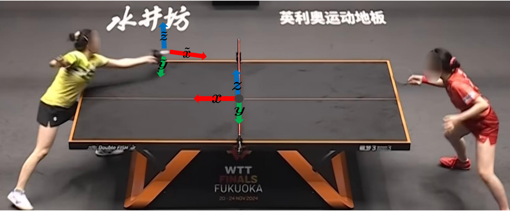
Figure 3 : World coordinate system ( , , ) and ball coordinate system ( , , ).
图3：世界坐标系（、、）和球坐标系（、、）。
Both are orthogonal coordinate systems.
两者都是正交坐标系。
Our model predicts two quantities: The 3D locations of the ball and the initial spin .
我们的模型预测两个量：球的 3D 位置和初始旋转。
To effectively describe these variables, we first define coordinate systems that facilitate both computation and human interpretation.
为了有效地描述这些变量，我们首先定义便于计算和人类解释的坐标系。
We introduce two coordinate systems: The world coordinate system and the ball coordinate system , both illustrated in Figure 3 .
我们引入两个坐标系：世界坐标系和球坐标系，如图3所示。
The world coordinate system , remains fixed at the center of the table for each trajectory.
对于每个轨迹，世界坐标系保持固定在球台的中心。
The - and -axes lie within the table plane, while the -axis points upwards.
-和-轴位于球台平面内，而-轴指向上方。
The unit vectors are defined as:
单位向量定义为：
|
|
(1) |
This system is well-suited for describing and analyzing the ball’s trajectory, which is why our model predicts the 3D trajectory in this coordinate system.
该系统非常适合描述和分析球的轨迹，这就是我们的模型在该坐标系中预测 3D 轨迹的原因。
However, while spin-related physical effects can be described in this system, interpreting individual spin components in an intuitive manner is difficult.
然而，虽然可以在该系统中描述与旋转相关的物理效应，但以直观的方式解释各个旋转分量是困难的。
For this reason, we introduce a second coordinate system optimized for human interpretation.
因此，我们引入了针对人类解释而优化的第二个坐标系。
Unlike the world coordinate system, the ball coordinate system is adjusted once per trajectory.
与世界坐标系不同，球坐标系每条轨迹调整一次。
This system is used to describe the ball’s initial spin in a more interpretable way.
该系统用于以更易于解释的方式描述球的初始旋转。
Its coordinate axes, denoted as , and , are defined as follows:
其坐标轴分别表示为、、，定义如下：
- •
The origin is set at the ball’s position in the first frame.
原点设置在第一帧中球的位置。
- •
The -axis aligns with the ball’s initial movement direction in the - plane.
轴与-平面中球的初始运动方向对齐。
- •
The -axis remains parallel to the -axis, pointing upwards.
轴与轴保持平行，指向上方。
- •
The -axis is orthogonal to both and lies in the - plane.
轴与两者正交，且位于-平面内。
Mathematical, the unit vectors are:
数学上，单位向量是：
| (2) | ||||
with denoting the -th timestep and being the euclidean norm of a vector.
其中表示第个时间步长，是向量的欧氏范数。
While the coordinate system is static during a trajectory, its center and orientation is different for each trajectory.
虽然坐标系在轨迹期间是静态的，但其中心和方向对于每个轨迹都是不同的。
If the trajectory is known, we can easily transform from one coordinate system to the other.
如果轨迹已知，我们可以轻松地从一个坐标系转换到另一个坐标系。
For training we use the ground truth 3D trajectory for the transformation and during inference we rely on the 3D trajectory predictions.
在训练中，我们使用真值 3D 轨迹进行转换，在推理过程中，我们依赖 3D 轨迹预测。
The ball coordinate system is chosen such that the main direction of the ball’s movement is aligned with the axis.
选择球坐标系，使球运动的主方向与轴对齐。
While there is also some movement in the direction, there is nearly no movement in the direction.
虽然方向也有一些移动，但方向几乎没有移动。
By adjusting the coordinate axes to the direction of the ball’s initial movement, we ensure that the ball can be interpreted in a meaningful way.
通过将坐标轴调整为球初始运动的方向，我们确保可以以有意义的方式解释球。
Especially the rotation around the axis, denoted as , is of high interest as it describes the top- or backspin of the ball.
尤其是围绕轴的旋转（表示为）非常有趣，因为它描述了球的上旋或下旋。
In the next section, we will discuss the influence of the individual spin components in the ball coordinate system on the ball’s trajectory in more detail.
在下一节中，我们将更详细地讨论球坐标系中各个旋转分量对球轨迹的影响。
3.3 Observability of Spin Components3.3 旋转分量的可观测性
Our model estimates the ball’s initial spin solely from the observed 2D trajectory.
我们的模型仅根据观察到的 2D 轨迹来估计球的初始旋转。
Therefore, if a spin component significantly affects the trajectory, we expect the model to learn it effectively.
因此，如果旋转分量显著影响轨迹，我们期望模型能够有效地学习它。
The spin is characterized as a 3D vector with its components describing the rotation around the corresponding axis of the ball coordinate system.
旋转的特征是一个 3D 矢量，其分量描述了围绕球坐标系相应轴的旋转。
It influences the trajectory in two primary ways:
它通过两种主要方式影响轨迹：
- •
The Magnus effect : This force acts on a spinning ball with velocity , given by
马格努斯效应：该力作用于速度的旋转球上，由下式给出
(3) where is a constant that depends on the ball’s surface properties.
其中是一个常数，取决于球的表面特性。
This force causes a deviation of the ball’s trajectory perpendicular to and and affects the ball during the entire flight.
该力使球的轨迹沿同时垂直于 和 的方向偏转，并在整个飞行过程中持续作用。
- •
Friction at Bounce : When the ball contacts the table, spin-induced friction generates force:
弹跳时的摩擦：当球接触球台时，旋转引起的摩擦会产生力：
(4) where is a constant describing the ball’s and table’s surface properties, and and are the unit vectors of the ball coordinate system.
其中是描述球和球台表面属性的常数，和是球坐标系的单位向量。
This force only appears directly at the bounce and is not present during the flight.
该力仅直接出现在弹跳时，并且在飞行过程中不存在。
The Magnus effect has the most significant influence on the trajectory, as it affects the ball during the entire flight.
马格努斯效应对轨迹的影响最为显著，因为它会影响球的整个飞行过程。
As the main movement of the ball is in direction, only the orthogonal spin components and significantly influence the trajectory due to the cross product in Equation 3 .
由于球的主要运动是在方向，由于等式3中的叉积，只有正交旋转分量和显著影响轨迹。
The friction force only appears during the bounce and, thus, has a smaller influence on the trajectory.
摩擦力仅在弹跳过程中出现，因此对轨迹的影响较小。
It is governed by and .
它由 和 决定。
As a result, and strongly impact the trajectory, while has a minor effect.
因此，和对轨迹影响较大，而影响较小。
Therefore, we expect our model to learn the spin components and effectively, while the prediction of will be more challenging.
因此，我们期望我们的模型能够有效地学习旋转分量和，而的预测将更具挑战性。
The spin around the axis, denoted as , describes the top- or backspin of the ball.
绕轴的旋转，表示为，描述了球的上旋或下旋。
This component is easily interpretable and, therefore, of great importance in our analyses.
该组件很容易解释，因此在我们的分析中非常重要。
In Figure 1 we illustrate the effect of the spin components on the ball’s trajectory in the image.
在图 1 中，我们说明了旋转分量对图像中球轨迹的影响。
We simulate the trajectory of the ball, setting the same initial position and velocity for each trajectory, and only varying a single spin component in each case.
我们模拟球的轨迹，为每个轨迹设置相同的初始位置和速度，并且在每种情况下仅改变单个旋转分量。
For each trajectory, we set one spin component to .
对于每条轨迹，我们将一个旋转分量设置为。
While the spin components and have a significant influence on the trajectory, has a negligible influence on the trajectory, which supports our previous discussion.
虽然旋转分量和对轨迹有显著影响，但对轨迹的影响可以忽略不计，这支持了我们之前的讨论。
4 Method4 方法
We train a neural network to predict the ball’s 3D trajectory and initial spin from its 2D trajectory.
我们训练神经网络来根据球的 2D 轨迹预测球的 3D 轨迹和初始旋转。
Each trajectory usually goes from the table tennis shot over a single touchdown on the tennis table to the next touch.
每条轨迹通常从一次击球开始，经过一次球台反弹，直到下一次触球。
The general pipeline of our method is shown in Figure 2 .
我们方法的一般流程如图 2 所示。
4.1 Training Objective4.1 训练目标
Our neural network is trained using a large dataset of simulated synthetic data, enabling direct supervision with synthetic ground truth .
我们的神经网络使用大量模拟合成数据进行训练，从而可以通过合成真值进行直接监督。
The loss function for predicting the 3D trajectory is defined as:
用于预测 3D 轨迹的损失函数定义为：
| (5) |
where represents the predicted 3D position of the ball at time , and denotes the corresponding ground truth position.
其中表示时刻球的预测3D位置，表示对应的真值位置。
The loss is averaged over all time steps .
损失是所有时间步上的平均值。
To evaluate the accuracy of the predicted initial spin, we define the spin loss as:
为了评估预测初始旋转的准确性，我们将旋转损失定义为：
| (6) |
where and are the predicted and ground truth initial spins, respectively.
其中和分别是预测的初始旋转和真值初始旋转。
Consequently, the total loss is given by
因此，总损失由下式给出
| (7) |
This formulation ensures that both the trajectory prediction and initial spin estimation are optimized simultaneously.
该公式确保轨迹预测和初始旋转估计同时优化。
Because both losses are in the same order of magnitude, we do not introduce additional weighting factors.
由于两种损失处于同一数量级，因此我们不引入额外的权重因子。
4.2 Base Architecture4.2 基础架构
Our proposed architecture consists of an embedding module and a Spin Prediction Transformer (SPT) .
本文架构由嵌入模块和旋转预测 Transformer（Spin Prediction Transformer，SPT）组成。
Given a sequence of length , the model takes as input the set of the 2D ball positions and 13 table keypoints at each time .
给定一个长度序列，模型将每次的2D球位置和13个球台关键点的集合作为输入。
The embedding module transforms this 2D information into a -dimensional location token for each .
嵌入模块将此二维信息转换为每个的维位置 token。
Additionally, a learnable spin token is prepended, resulting in the sequence that is then processed by the SPT.
此外，还会在前面添加一个可学习的旋转 token，从而产生序列，然后由 SPT 进行处理。
After the final transformer layer, a position head is applied to each transformed location token individually, predicting the 3D positions .
在最终的Transformer层之后，位置头被单独应用于每个转换后的位置 token，预测 3D 位置。
Similarly, a spin head is applied to , predicting the initial spin .
类似地，将旋转头应用于，预测初始旋转。
The overall architecture is illustrated in Figure 2 .
整体架构如图2所示。
Token EmbeddingsToken 嵌入
We explore three embedding strategies for computing the location tokens :
我们探索了三种计算位置 token的嵌入策略：
- •
Concatenation Method: Concatenates the 2D coordinates of all 14 points (ball position + 13 table points) into a single vector, followed by an MLP with one hidden layer to obtain the location token .
拼接方法：将所有 14 个点（球位置 + 13 个球台点）的 2D 坐标连接成单个向量，然后通过具有一个隐藏层的 MLP 来获得位置 token。
- •
Dynamic Method: Treats each of the 14 points as a separate token, projects them into a -dimensional space using an MLP with one hidden layer, and condenses the information via a 4-layer transformer encoder.
动态方法：将 14 个点中的每个点视为一个单独的标记，使用具有一个隐藏层的 MLP 将它们投影到维空间中，并通过 4 层Transformer编码器压缩信息。
The transformed ball position token is used as , discarding the other tokens.
变换后的球位置 token用作，丢弃其他标记。
- •
Context-Free Method: Uses only the 2D ball position as input.
上下文无关方法：仅使用 2D 球位置作为输入。
An MLP with one hidden layer projects the ball position into the -dimensional space to obtain the location token .
具有一个隐藏层的 MLP 将球位置投影到维空间中以获得位置 token。
This method serves as a baseline to check if the information from the table keypoints is needed.
此方法用作检查是否需要球台关键点信息的基线。
These methods are visualized in Figure 7 of the supplementary material.
这些方法在补充材料的图 7 中进行了可视化。
Spin Prediction Transformer旋转预测 Transformer
(a) Single-Stage Model
(a) 单阶段模型
(b) Two-Stage Model
(b) 两阶段模型
(c) Connect-Stage Model
(c) 连接阶段模型
Figure 4 : Illustration of the 3 different SPT architectures.
图 4：3 种不同 SPT 架构的图示。
In the single-stage model, the trajectory is predicted jointly with the spin.
在单阶段模型中，轨迹与旋转一起预测。
The two-stage model predicts only the 3D positions in the first stage and uses these predictions to estimate the spin in the second stage.
两阶段模型仅预测第一阶段中的 3D 位置，并使用这些预测来估计第二阶段中的旋转。
The connect-stage model uses the transformed tokens as input for the second stage.
连接阶段模型使用转换后的标记作为第二阶段的输入。
The SPT is an encoder-only transformer with layers.
SPT 是仅包含编码器的 Transformer，共有 层。
It processes the sequence and outputs tokens.
它处理序列并输出标记。
A position head is applied to each transformed location token for predicting the 3D positions , while the spin head processes the spin token to predict the initial spin .
位置头应用于每个变换后的位置 token以预测3D位置，而旋转头处理旋转 token以预测初始旋转。
We explore three SPT architectures (see Figure 4 ):
我们探索了三种 SPT 架构（见图 4）：
- •
Single-Stage Model: Prepends the spin token to the location tokens before the first transformer layer.
单阶段模型：将旋转 token添加到第一个Transformer层之前的位置 token中。
It predicts positions and spin jointly by processing all tokens together.
模型共同处理所有 token，联合预测位置和旋转。
However, this approach does not explicitly enforce a dependency between trajectory and spin.
然而，这种方法并没有明确强制轨迹和旋转之间的依赖关系。
- •
Two-Stage Model: Enforces a physical bottleneck by first predicting 3D positions with transformer layers (no spin token is prepended), then using these positions as the only input for spin prediction in a second stage (4-layer transformer).
两阶段模型：先用 层 Transformer 预测三维位置 （此阶段不加入旋转 token），再将这些位置作为第二阶段 4 层 Transformer 的唯一输入来预测旋转，从而引入物理瓶颈。
Since spin and trajectory are directly linked, spin alters the trajectory and trajectory encodes spin information, our model explicitly captures this dependency.
由于旋转和轨迹直接相关，旋转改变轨迹，轨迹编码旋转信息，我们的模型明确地捕获了这种依赖性。
While this architecture mimics this physical connection, any noise in the predicted positions directly affects spin accuracy.
虽然这种架构模仿了这种物理连接，但预测位置中的任何噪声都会直接影响旋转精度。
- •
Connect-Stage Model: Addresses the rigid bottleneck in the two-stage model by using the transformed tokens before the application of the position head as input of the second stage.
连接阶段模型：将位置预测头之前的变换后 token 输入第二阶段，缓解两阶段模型中严格的信息瓶颈。
This softens the spin’s dependency on the trajectory prediction, while still maintaining the physically motivated structure.
这软化了旋转对轨迹预测的依赖性，同时仍然保持物理驱动的结构。
Further implementation details进一步的实现细节
While the positions are always predicted in the world coordinate system, we can predict the initial spin either in the world or the ball coordinate system.
虽然位置总是在世界坐标系中预测，但我们可以在世界坐标系或球坐标系中预测初始旋转。
If predicted in the world coordinate system, it is converted to the ball coordinate system, which is described by Equation 2 .
如果在世界坐标系中预测，则转换为球坐标系，如公式 2 所示。
We use Rotary Positional Embeddings (RoPE) [ 38 ] , which have been recently gaining popularity in the field of language processing [ 19 , 28 , 20 ] , to encode the order of the tokens.
我们使用旋转位置编码（RoPE）[38]，它最近在语言处理领域[19,28,20]越来越流行，来对标记的顺序进行编码。
Instead of adding absolute positional embeddings [ 43 ] , a rotation is applied to the queries and keys before each attention computation.
不是添加绝对位置嵌入[43]，而是在每次注意力计算之前对查询和键应用旋转。
The strength of the rotation is dependent on the position in the sequence, thus the computed attention scores include positional information.
旋转的强度取决于序列中的位置，因此计算的注意力分数包括位置信息。
We implement and test different hyperparameters of the architecture and define various sizes of the model as shown in Table 4 of the supplementary material.
我们实现并测试了架构的不同超参数，并定义了模型的各种大小，如补充材料的表 4 所示。
We use a model with and , referred to as large model, for all experiments.
我们使用和的模型（称为大模型）进行所有实验。
5 Data5 数据
5.1 Synthetic Data Generation5.1 合成数据生成
We generate physically accurate table tennis trajectories using MuJoCo [ 40 ] , with a particular focus on realistic ball bounces, which significantly impact data quality.
我们使用 MuJoCo [40] 生成物理上准确的乒乓球轨迹，特别关注真实的球弹跳，这会显著影响数据质量。
Following [ 10 ] , which trained a human-level robot using synthetic data alone, we adopt the same simulation parameters.
按照仅使用合成数据训练人类水平机器人的[10]，我们采用相同的模拟参数。
Trajectories are generated by sampling initial position, velocity, and spin, followed by simulating the trajectory.
通过对初始位置、速度和旋转进行采样，然后模拟轨迹来生成轨迹。
Only valid trajectories are kept.
仅保留有效的轨迹。
A valid trajectory starts on the left side, bounces once on the opponent’s side, and ends on the right, ensuring full visibility in the camera frame.
有效的轨迹从左侧开始，在对手一侧弹跳一次，然后在右侧结束，从而确保摄像机画面中的完全可见性。
We collect 50,000 valid trajectories, split into 70% training, 10% validation, and 20% test set.
我们收集了 50,000 个有效轨迹，分为 70% 训练集、10% 验证集和 20% 测试集。
To ensure robustness, we vary camera parameters during training while using real-data camera parameters for validation and testing.
为了确保鲁棒性，我们在训练期间改变相机参数，同时使用真实数据相机参数进行验证和测试。
We illustrate some sampled camera parameters in Figure 10 of the supplementary material.
我们在补充材料的图 10 中说明了一些采样的相机参数。
As ground-truth 3D trajectories and rotations are available in synthetic data, we compute the spin error as
由于合成数据中存在真值 3D 轨迹和旋转，我们将旋转误差计算为
| (8) |
and the 3D trajectory error as
3D 轨迹误差为
| (9) |
where is the number of trajectories, indexes the different trajectories, indexes time steps of a trajectory, is the length of trajectory , and is the Euclidean vector norm.
其中是轨迹的数量，索引不同的轨迹，索引轨迹的时间步长，是轨迹的长度，是欧氏向量范数。
5.2 Real Data5.2 真实数据
Although training is solely conducted on synthetic data, we assess generalization on real table tennis broadcasts.
尽管训练仅在合成数据上进行，但我们评估了真实乒乓球转播的泛化能力。
We manually annotate 50 2D ball trajectories from six WTTF matches, totaling 1197 annotated frames.
我们手动标注了 6 场 WTTF 比赛中的 50 个 2D 球轨迹，总共 1197 个标注帧。
Table keypoints are annotated once per trajectory and reused across frames.
球台关键点每个轨迹标注一次并跨帧重复使用。
The videos have a resolution at .
视频分辨率为 ，帧率为 。
While obtaining 3D ground truth for real data is infeasible, we manually label spin direction (top-/backspin) by analyzing paddle positions in the image (Figure 9 , supplementary material).
虽然获得真实数据的 3D 真值是不可行的，但我们通过分析图像中的球拍位置来手动标记旋转方向（上旋/下旋）（图 9，补充材料）。
We evaluate classification accuracy as
我们评估分类准确度为
| (10) |
where is the annotated class (1 for topspin, -1 for backspin), is the predicted spin, is the sign function, and is 1 if , otherwise .
其中是标注类别（1表示上旋，-1表示下旋），是预测旋转，是符号函数，如果则为1，否则。
Similarly, we also compute the macro F1-score.
同样，我们还计算宏平均 F1 分数。
To convert the estimated into a binary classification, we set a fixed threshold at , which is physically justified since the sign of determines the spin direction.
为了将估计的转换为二元分类，我们在处设置了一个固定阈值，这在物理上是合理的，因为的符号决定了旋转方向。
However, this strict threshold may overly penalize trajectories with weak spin, where small prediction errors lead to entirely incorrect classifications.
然而，这个严格的阈值可能会过度惩罚旋转较弱的轨迹，其中小的预测误差会导致完全错误的分类。
In standard binary classification tasks, the ROC-AUC metric [ 14 ] avoids reliance on a fixed threshold, making it a more robust performance measure.
在标准二元分类任务中，ROC-AUC 指标 [14] 避免了对固定阈值的依赖，使其成为更稳健的性能衡量标准。
While accuracy and F1-score remain our primary metrics due to the known threshold, we also evaluate ROC-AUC, as it provides a more nuanced assessment, especially for predictions near zero.
虽然由于已知阈值，准确度和 F1 分数仍然是我们的主要指标，但我们还评估 ROC-AUC，因为它提供了更细致的评估，特别是对于接近零的预测。
As we will see in the experiments, the key threshold values in the ROC-AUC computation are indeed close to zero, further supporting its relevance (see Figure 5(b) ) For trajectory evaluation, we project predicted 3D paths into 2D image coordinates and compute the 2D reprojection error :
正如我们将在实验中看到的，ROC-AUC 计算中的关键阈值确实接近于零，进一步支持了其相关性（见图 5(b)）。对于轨迹评估，我们将预测的 3D 路径投影到 2D 图像坐标并计算 2D 重投影误差：
|
|
(11) |
where projects 3D coordinates into 2D image positions.
其中将 3D 坐标投影到 2D 图像位置。
The matrix is estimated using the table point annotations (see Section C in the supplementary material).
矩阵是使用球台点标注来估计的（参见补充材料中的C节）。
Instead of evaluating the absolute pixel error, we divide through the image diagonal length (with being the video resolution).
我们不评估绝对像素误差，而是除以图像对角线长度（是视频分辨率）。
Consequently, we obtain a relative error that is not dependent on the video resolution and, thus, allows for better human interpretability.
因此，我们获得了不依赖于视频分辨率的相对误差，从而实现了更好的人类可解释性。
Despite lacking direct 3D annotations, our methodology enables indirect assessment of the generalization ability through classification and projected trajectory comparisons.
尽管没有直接的三维标注，仍可通过旋转分类以及重投影轨迹对比，间接评估模型的泛化能力。
5.3 Data Augmentations5.3 数据增强
By using a smart data representation instead of raw visual data as input and utilizing physically correct synthetic data, we enable the model to generalize to real broadcast.
通过使用智能数据表示而不是原始视觉数据作为输入并利用物理上正确的合成数据，我们使模型能够推广到真实的转播。
However, three key challenges still introduce inaccuracies:
然而，三个关键挑战仍然会带来不准确性：
- •
Motion Blur : The ball exhibits strong motion blur, making precise localization difficult and introducing errors absent in synthetic data.
运动模糊：球表现出强烈的运动模糊，使得精确定位变得困难，并引入合成数据中不存在的错误。
- •
Sudden Trajectory Stops : In real matches, the opponent’s hit often terminates the trajectory suddenly, unlike in synthetic simulations where we do not simulate the opposing player.
轨迹突然停止：在真实比赛中，对手的击球通常会突然终止轨迹，这与我们不模拟对手的合成模拟不同。
- •
Annotation Errors : Manually labeled table points may contain slight inaccuracies, whereas synthetic training data is always precise.
标注错误：手动标记的球台点可能包含轻微的不准确之处，而合成训练数据始终是精确的。
To mitigate these effects, we introduce three augmentations: motion blur , sudden trajectory stop , and gaussian blur .
为了减轻这些影响，我们引入了三种增强功能：运动模糊、轨迹突然停止和高斯模糊。
The implementation of the different augmentations is described in more detail in Section D of the supplementary material.
补充材料的 D 部分更详细地描述了不同增强功能的实现。
6 Results6 实验结果
Each model is implemented in PyTorch [ 3 ] and trained on a single NVIDIA H100 GPU.
每个模型都在 PyTorch [3] 中实现，并在单个 NVIDIA H100 GPU 上进行训练。
We use a fixed learning rate of and a batch size of 64.
我们使用固定学习率和批量大小64。
Model weights are optimized with ADAM [ 26 ] , and an Exponential Moving Average (EMA) with a decay of [ 39 ] is applied.
使用 ADAM [26] 优化模型权重，并应用衰减为[39] 的指数移动平均线 (EMA)。
Training runs for 800 epochs, and we select the model with the best score on the synthetic validation set.
训练运行 800 个 epoch，我们选择在综合验证集上具有最佳分数的模型。
We consistently use the large model with rotary positional encodings, predicting spin in the world coordinate system.
我们始终使用具有旋转位置编码的大型模型，预测世界坐标系中的旋转。
Additional ablations on these parameters are provided in the supplementary material.
补充材料中提供了对这些参数的额外消融。
Our primary focus is on real-data performance, as generalization to real-world scenarios is crucial.
我们的主要关注点是真实数据性能，因为对真实场景的泛化至关重要。
Synthetic performance is not relevant for practical applications, but is included in all tables.
合成性能与实际应用无关，但包含在所有表中。
We further discuss the significance of synthetic results in Section 6.1 .
我们在 6.1 节中进一步讨论合成数据结果的意义。
6.1 Evaluation of SPT Architectures6.1 SPT架构评估
We compare the SPT architectures introduced in Section 4.2 without data augmentations, using the concatenation method for token embeddings.
我们比较了 4.2 节中介绍的没有数据增强的 SPT 架构，使用拼接方法进行token嵌入。
Results are shown in Table 1 .
结果如表1所示。
| Synthetic合成的 | Real真实 | |||||
| Method方法 | acc acc | ROC-AUC ROC-AUC | ||||
| single-stage单级 | ||||||
| two-stage两阶段 | ||||||
| connect-stage连接阶段 | ||||||
Table 1 : Comparison of different SPT architectures.
表 1：不同 SPT 架构的比较。
The best results on the real data are highlighted in bold.
真实数据的最佳结果以粗体突出显示。
The single-stage model performs well for spin prediction on synthetic data but fails to generalize to real data.
单阶段模型对于合成数据的旋转预测表现良好，但无法推广到实际数据。
Its 3D trajectory predictions are also subpar.
它的 3D 轨迹预测也低于标准。
The two-stage model, in contrast, achieves strong results on real data despite weaker synthetic performance.
相比之下，两阶段模型尽管合成性能较弱，但在实际数据上取得了很好的结果。
The connect-stage model slightly lags behind the two-stage model in accuracy and macro F1 score but outperforms in ROC-AUC and 2D reprojection error ( ).
连接阶段模型在准确性和宏平均 F1 分数方面略落后于两阶段模型，但在 ROC-AUC 和 2D 重投影误差（）方面优于两阶段模型。
Both two-stage and connect-stage models generalize well.
两阶段模型和连接阶段模型都具有良好的通用性。
The two-stage model is preferable for spin classification, while the connect-stage model excels in 3D trajectory prediction.
两阶段模型更适合旋转分类，而连接阶段模型则擅长 3D 轨迹预测。
Conclusively, both models are suitable for our task.
总之，这两种模型都适合我们的任务。
As the connect-stage model subjectively offers the best balance, we use it for further experiments.
由于连接阶段模型主观上提供了最佳平衡，因此我们将其用于进一步的实验。
Synthetic results do not reliably predict real-world performance.
在合成数据上的结果无法可靠地预示真实场景中的表现。
For instance, the single-stage model excels on synthetic data but fails on real data, whereas the two-stage model shows the opposite trend.
例如，单阶段模型在合成数据上表现出色，但在真实数据上表现不佳，而两阶段模型则显示出相反的趋势。
This suggests that the physically motivated bottleneck in the two-stage and connect-stage models improves generalization.
这表明两阶段和连接阶段模型中的物理驱动瓶颈提高了泛化能力。
By constraining the model architecture, we enhance real-data applicability despite training solely on synthetic data.
通过限制模型架构，我们增强了实际数据的适用性，尽管仅对合成数据进行训练。
Hence, subsequent experiments focus exclusively on real-data performance.
因此，后续实验仅关注真实数据性能。
6.2 Evaluation of Token Embedding Methods6.2 token嵌入方法的评估
We assess different token embedding methods discussed in Section 4.2 using the connect-stage architecture without data augmentations.
我们使用没有数据增强的连接阶段架构来评估第 4.2 节中讨论的不同token嵌入方法。
Results are presented in Table 2 .
结果如表 2 所示。
| Synthetic合成的 | Real真实 | |||||
| Method方法 | acc acc | ROC-AUC ROC-AUC | ||||
| context free上下文无关 | ||||||
| dynamic动态 | ||||||
| concatenation拼接 | ||||||
Table 2 : Comparison of different embedding methods.
表 2：不同嵌入方法的比较。
The best results on the real data are highlighted in bold.
真实数据的最佳结果以粗体突出显示。
The context-free method performs the worst across all metrics.
上下文无关方法在所有指标中表现最差。
Without table keypoints, it fails to capture sufficient scene context, confirming that the 2D trajectory alone is inadequate for an end-to-end method.
如果没有球台关键点，它就无法捕获足够的场景上下文，这证实了仅凭 2D 轨迹不足以实现端到端方法。
In contrast, both dynamic and concatenation methods yield strong results, demonstrating the importance of table keypoints as input.
相比之下，动态方法和拼接方法都产生了很好的结果，证明了球台关键点作为输入的重要性。
The dynamic method is best for spin classification, while the concatenation method slightly outperforms in 3D trajectory prediction.
动态方法最适合旋转分类，而拼接方法在 3D 轨迹预测方面稍胜一筹。
We attribute the dynamic method’s success to its more complex embedding process, which leverages transformer layers to integrate keypoint and ball position data.
我们将动态方法的成功归因于其更复杂的嵌入过程，该过程利用Transformer 层来集成关键点和球位置数据。
However, this increases the parameter count, computational cost and results in sensitivity to hyperparameters as well as less stable training.
然而，这增加了参数数量、计算成本，并导致对超参数的敏感性以及训练的稳定性降低。
Given its robustness and efficiency, we select the concatenation method for our further experiments.
鉴于其稳健性和效率，我们选择拼接方法进行进一步的实验。
6.3 Evaluation of Data Augmentations6.3 数据增强的评估
We evaluate the three data augmentation techniques described in Section 5.3 using the connect-stage architecture with concatenation embeddings.
我们使用具有拼接嵌入的连接阶段架构来评估第 5.3 节中描述的三种数据增强技术。
Results are in Table 3 .
结果见表3。
| Method方法 | Synthetic合成的 | Real真实 | ||||||
| motion blur 运动模糊 | sudden end 突然结束 | gaus. blur 高斯模糊 | acc acc | ROC-AUC ROC-AUC | ||||
| ✕ | ✕ | ✕ | ||||||
| ✓ | ✕ | ✕ | ||||||
| ✕ | ✓ | ✕ | ||||||
| ✕ | ✕ | ✓ | ||||||
| ✓ | ✓ | ✓ | ||||||
Table 3 : Comparison of different data augmentations. ✓ indicates the application of the augmentation, while ✕ indicates the absence of the augmentation.
表 3：不同数据增强的比较。 ✓ 表示应用了增强，而 ✕ 表示没有增强。
The best results on the real data are highlighted in bold.
真实数据的最佳结果以粗体突出显示。
All augmentations improve generalization to real data, with sudden end augmentation providing the most substantial gains across all metrics.
所有增强都提高了对真实数据的泛化，突然结束增强在所有指标中提供了最实质性的收益。
Motion blur also enhances performance significantly, while Gaussian blur offers only slight improvements.
运动模糊还显著提高了性能，而高斯模糊仅提供了轻微的改进。
This demonstrates that making synthetic data more realistic significantly boosts real-world performance.
这表明，使合成数据更加真实可以显著提高现实世界的性能。
Since each augmentation contributes positively, we combine them in the last row of Table 3 .
由于每个增强都会产生积极的贡献，因此我们将它们合并在表 3 的最后一行中。
This results in a notable reduction in 2D reprojection error while maintaining strong spin prediction accuracy.
这使得 2D 重投影误差显著减少，同时保持强大的旋转预测精度。
This model gives a good trade-off between spin classification and 3D trajectory prediction and, thus, this combination is referred to as the best model in the following experiments.
该模型在旋转分类和 3D 轨迹预测之间提供了良好的权衡，因此，该组合在以下实验中被称为最佳模型。
Although the model already performs well on real data without any augmentations, applying them further enhances performance.
尽管该模型在没有任何增强的情况下已经在真实数据上表现良好，但应用它们可以进一步增强性能。
Our best model nearly achieves perfect results, indicating that augmentations effectively bridge the gap between synthetic and real data.
我们最好的模型几乎达到了完美的结果，这表明增强有效地弥合了合成数据和真实数据之间的差距。
They are the final step to enable generalization from synthetic training alone.
它们是仅从合成训练中实现泛化的最后一步。
6.4 Detailed Evaluation of Best Model6.4 最佳模型的详细评估
In this section, we analyze the performance of our best model in greater detail.
在本节中，我们将更详细地分析最佳模型的性能。
This model, corresponding to the last row in Table 3 , employs the connect-stage architecture with concatenation token embeddings and incorporates all data augmentations during training.
该模型对应于表 3 中的最后一行，采用具有拼接token嵌入的连接阶段架构，并在训练期间合并所有数据增强。
Our focus is on evaluating its effectiveness in spin classification and 3D trajectory prediction on real data.
我们的重点是评估其在真实数据的旋转分类和 3D 轨迹预测方面的有效性。
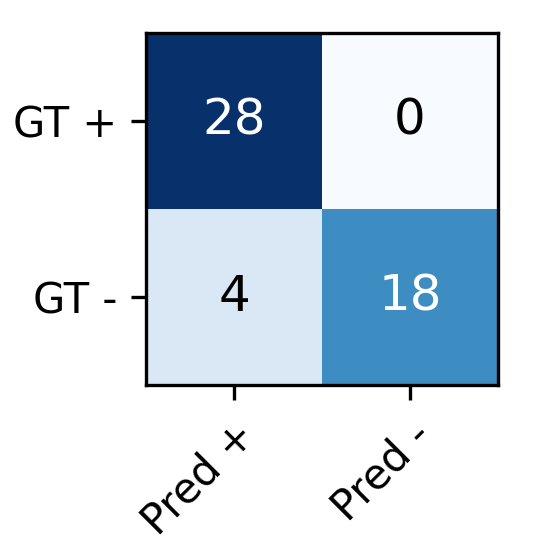
(a) Confusion matrix for spin classification on real data.
(a) 真实数据旋转分类的混淆矩阵。
Topspin is + and backspin - .
上旋为+，下旋为-。
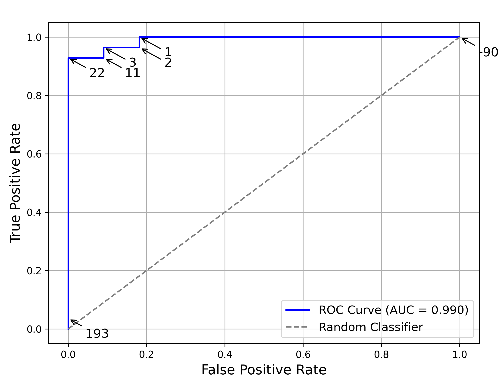
(b) ROC curve for spin classification on real data.
(b) 真实数据上旋转分类的 ROC 曲线。
The arrows indicate the threshold values in Hz for the predicted .
箭头表示预测的的阈值（以 Hz 为单位）。
Figure 5 : Confusion matrix and ROC plot for the best model on the real dataset.
图 5：真实数据集上最佳模型的混淆矩阵和 ROC 图。
Spin Classification Performance旋转分类性能
Figure 5 presents the confusion matrix and the ROC curve for spin classification on the real test dataset.
图 5 展示了真实测试数据集上旋转分类的混淆矩阵和 ROC 曲线。
The confusion matrix reveals that the model distinguishes well between topspin and backspin, though a slight bias towards topspin is noticeable.
混淆矩阵表明，该模型很好地区分了上旋球和下旋球，但明显偏向上旋球。
This is also reflected in the ROC curve, where the threshold values for predicted are subtly shifted towards topspin.
ROC 曲线也体现出这一现象：预测量 的分类阈值略微偏向上旋一侧。
Despite this bias, the threshold values remain close to the physically correct threshold of , suggesting that the model’s predictions are not significantly skewed.
尽管存在这种偏差，阈值仍然接近的物理正确阈值，这表明模型的预测没有显著偏差。
Even though we cannot evaluate the exact values of on the real data, the smooth and consistent behavior observed in the ROC thresholds indicates that the model produces reasonable and stable predictions.
尽管我们无法评估真实数据上的准确值，但在 ROC 阈值中观察到的平滑且一致的行为表明该模型产生了合理且稳定的预测。
Overall, these results confirm the model’s reliability in spin classification.
总的来说，这些结果证实了该模型在旋转分类方面的可靠性。
3D Trajectory Prediction Performance3D 轨迹预测性能
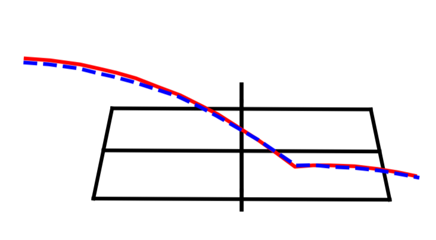
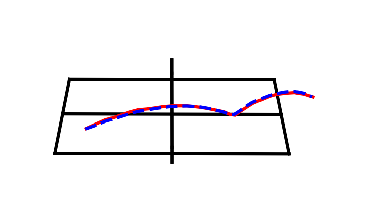
Figure 6 : Comparison of reprojection of the predicted trajectory (dashed blue) with the annotated 2D trajectory (solid red).
图 6：预测轨迹（蓝色虚线）与带标注的 2D 轨迹（红色实线）的重投影比较。
We present two examples on the real dataset.
我们在真实数据集上展示了两个例子。
In Figure 6 , we illustrate predicted trajectories on the real dataset.
在图 6 中，我们展示了在真实数据集上的预测轨迹。
To compare a predicted trajectory with the corresponding annotated 2D trajectory, we calculate the reprojection of the predicted 3D trajectory onto the 2D image.
为了将预测轨迹与相应的带标注的 2D 轨迹进行比较，我们计算了预测 3D 轨迹在 2D 图像上的重投影。
In both examples, the predicted trajectory closely follows the annotated ground truth, demonstrating strong alignment between the two.
在这两个示例中，预测轨迹都紧密遵循带标注的真值，这表明两者之间具有很强的一致性。
This suggests that the model effectively captures the underlying 3D motion of the ball and generalizes well to real-world data.
这表明该模型有效地捕获了球的底层 3D 运动，并可以很好地推广到现实世界的数据。
The high accuracy in trajectory prediction confirms that the model correctly generalizes to real data, showing its suitability for practical applications.
轨迹预测的高精度证实了该模型可以正确推广到实际数据，表明其适合实际应用。
7 Conclusion7 结论
In this paper, we introduced a method for predicting the 3D trajectory and initial spin of a table tennis ball in broadcast videos.
在本文中，我们介绍了一种预测转播视频中乒乓球的 3D 轨迹和初始旋转的方法。
A key aspect of our approach is that the model is trained exclusively on synthetic data, yet it generalizes remarkably well to real-world footage.
我们方法的一个关键方面是该模型专门针对合成数据进行训练，但它可以很好地推广到现实世界的镜头。
This strong generalization is achieved through a combination of a carefully designed data representation, physically grounded synthetic training data, and problem-specific data augmentations.
这种强大的泛化能力是通过精心设计的数据表示、物理基础的合成训练数据和针对特定问题的数据增强的组合来实现的。
Notably, our results demonstrate that these straightforward, yet effective steps are sufficient to bridge the gap between synthetic and real data.
值得注意的是，我们的结果表明，这些简单而有效的步骤足以弥合合成数据和真实数据之间的差距。
Our method enables detailed analysis of a player’s technique using standard monocular RGB videos, making advanced performance evaluation more accessible.
我们的方法可以使用标准单目 RGB 视频对球员的技术进行详细分析，从而更容易进行高级表现评估。
It can be applied both by professionals analyzing broadcast footage and by amateurs using a simple smartphone camera, broadening its usability across different levels of expertise.
它既可以由专业人士分析转播镜头，也可以由业余爱好者使用简单的智能手机摄像头来应用，从而扩大了其在不同专业水平上的可用性。
References
- [1] Y.I Abdel-Aziz, H.M. Karara, and Michael Hauck. Direct linear transformation from comparator coordinates into object space coordinates in close-range photogrammetry. Photogrammetric Engineering and Remote Sensing, 81(2):103–107, 2015.
- [2] Jan Achterhold, Philip Tobuschat, Hao Ma, Dieter Büchler, Michael Muehlebach, and Joerg Stueckler. Black-box vs. gray-box: A case study on learning table tennis ball trajectory prediction with spin and impacts. In Proceedings of the Learning for Dynamics and Control Conference (L4DC), 2023.
- [3] Jason Ansel, Edward Yang, Horace He, Natalia Gimelshein, Animesh Jain, et al. Pytorch 2: Faster machine learning through dynamic python bytecode transformation and graph compilation. In Proceedings of the 29th ACM International Conference on Architectural Support for Programming Languages and Operating Systems, Volume 2, pages 929–947, 2024.
- [4] Tobias Baumgartner and Stefanie Klatt. Monocular 3d human pose estimation for sports broadcasts using partial sports field registration. In Proceedings of the IEEE/CVF Conference on Computer Vision and Pattern Recognition (CVPR) Workshops, pages 5109–5118, 2023.
- [5] C. G. BROYDEN. The Convergence of a Class of Double-rank Minimization Algorithms 1. General Considerations. IMA Journal of Applied Mathematics, 6(1):76–90, 1970.
- [6] Marcello Davide Caio, Gabriel Van Zandycke, and Christophe De Vleeschouwer. Context-aware 3d object localization from single calibrated images: A study of basketballs. In Proceedings of the 6th International Workshop on Multimedia Content Analysis in Sports, page 49–54, 2023.
- [7] Jordan Calandre, Renaud Péteri, Laurent Mascarilla, and Benoit Tremblais. Extraction and analysis of 3d kinematic parameters of table tennis ball from a single camera. In 2020 25th International Conference on Pattern Recognition (ICPR), pages 9468–9475, 2021.
- [8] Hua-Tsung Chen, Ming-Chun Tien, Yi-Wen Chen, Wen-Jiin Tsai, and Suh-Yin Lee. Physics-based ball tracking and 3d trajectory reconstruction with applications to shooting location estimation in basketball video. Soft Computing, 20(3):204–216, 2009.
- [9] Zaineb Chiha, Renaud Peteri, and Laurent Mascarilla. Predicting 3d projectile motion in table tennis using computer vision and physics-informed neural network. In International Conference on Content-Based Multimedia Indexing (CBMI), pages 1–7, 2024.
- [10] David B. D’Ambrosio, Saminda Abeyruwan, Laura Graesser, Atil Iscen, Heni Ben Amor, Alex Bewley, Barney J. Reed, Krista Reymann, Leila Takayama, Yuval Tassa, Krzysztof Choromanski, Erwin Coumans, Deepali Jain, Navdeep Jaitly, Natasha Jaques, Satoshi Kataoka, Yuheng Kuang, Nevena Lazic, Reza Mahjourian, Sherry Moore, Kenneth Oslund, Anish Shankar, Vikas Sindhwani, Vincent Vanhoucke, Grace Vesom, Peng Xu, and Pannag R. Sanketi. Achieving human level competitive robot table tennis. ArXiv, abs/2408.03906, 2024.
- [11] Moritz Einfalt and Rainer Lienhart. Decoupling video and human motion: Towards practical event detection in athlete recordings. In Proceedings of the IEEE/CVF Conference on Computer Vision and Pattern Recognition (CVPR) Workshops, 2020.
- [12] Moritz Einfalt, Katja Ludwig, and Rainer Lienhart. Uplift and upsample: Efficient 3d human pose estimation with uplifting transformers. In Proceedings of the IEEE/CVF Winter Conference on Applications of Computer Vision (WACV), 2023.
- [13] Morten Holck Ertner, Sofus Schou Konglevoll, Magnus Ibh, and Stella Graßhof. Synthnet: Leveraging synthetic data for 3d trajectory estimation from monocular video. In Proceedings of the 7th ACM International Workshop on Multimedia Content Analysis in Sports, page 51–58, 2024.
- [14] Tom Fawcett. Introduction to roc analysis. Pattern Recognition Letters, 27:861–874, 2006.
- [15] Jerome Fink, Pierre Poitier, Maxime André, Loup Meurice, Benoît Frénay, Anthony Cleve, Bruno Dumas, and Laurence Meurant. Sign language-to-text dictionary with lightweight transformer models. In Proceedings of the 32nd International Joint Conference on Artificial Intelligence, IJCAI 2023, pages 5968–5976, 2023.
- [16] Martin A. Fischler and Robert C. Bolles. Random sample consensus: a paradigm for model fitting with applications to image analysis and automated cartography. Communications of the ACM, 24(6):381–395, 1981.
- [17] Thomas Gossard, Jonas Tebbe, Andreas Ziegler, and Andreas Zell. Spindoe: A ball spin estimation method for table tennis robot. In 2023 IEEE/RSJ International Conference on Intelligent Robots and Systems (IROS), pages 5744–5750, 2023.
- [18] Thomas Gossard, Julian Krismer, Andreas Ziegler, Jonas Tebbe, and Andreas Zell. Table tennis ball spin estimation with an event camera. In Proceedings of the IEEE/CVF Conference on Computer Vision and Pattern Recognition (CVPR) Workshops, pages 3347–3356, 2024.
- [19] Aaron Grattafiori, Abhimanyu Dubey, Abhinav Jauhri, Abhinav Pandey, Abhishek Kadian, et al. The Llama 3 Herd of Models. arXiv e-prints, art. arXiv:2407.21783, 2024.
- [20] Suriya Gunasekar, Yi Zhang, Jyoti Aneja, Caio César Teodoro Mendes, Allie Del Giorno, Sivakanth Gopi, Mojan Javaheripi, Piero Kauffmann, Gustavo de Rosa, Olli Saarikivi, Adil Salim, Shital Shah, Harkirat Singh Behl, Xin Wang, Sébastien Bubeck, Ronen Eldan, Adam Tauman Kalai, Yin Tat Lee, and Yuanzhi Li. Textbooks are all you need, 2023.
- [21] Hawk-Eye Innovations. Hawk-eye. https://www.hawkeyeinnovations.com. Accessed: 2025-02-14.
- [22] Chen Huang, Wen-Jiin Tsai, Suh-Yin Lee, and Jen-Yu Yu. Ball tracking and 3d trajectory approximation with applications to tactics analysis from single-camera volleyball sequences. Multimedia Tools and Applications - MTA, 60, 2012.
- [23] Magnus Ibh, Stella Grasshof, Dan Witzner, and Pascal Madeleine. Tempose: a new skeleton-based transformer model designed for fine-grained motion recognition in badminton. In 2023 IEEE/CVF Conference on Computer Vision and Pattern Recognition Workshops (CVPRW), pages 5199–5208, 2023.
- [24] Daniel Kienzle, Marco Kantonis, Robin Schön, and Rainer Lienhart. Segformer++: Efficient token-merging strategies for high-resolution semantic segmentation. IEEE International Conference on Multimedia Information Processing and Retrieval (MIPR), 2024a.
- [25] Daniel Kienzle, Julian Lorenz, Katja Ludwig, and Rainer Lienhart. Towards learning monocular 3d object localization from 2d labels using the physical laws of motion. Proceedings of the International Conference on 3D Vision 2024 (3DV), 2024b.
- [26] Diederik Kingma and Jimmy Ba. Adam: A method for stochastic optimization. International Conference on Learning Representations, 2014.
- [27] Paul Liu and Jui-Hsien Wang. Monotrack: Shuttle trajectory reconstruction from monocular badminton video. In Proceedings of the IEEE/CVF Conference on Computer Vision and Pattern Recognition (CVPR) Workshops, pages 3513–3522, 2022.
- [28] Haoyu Lu, Wen Liu, Bo Zhang, Bingxuan Wang, Kai Dong, Bo Liu, Jingxiang Sun, Tongzheng Ren, Zhuoshu Li, Hao Yang, Yaofeng Sun, Chengqi Deng, Hanwei Xu, Zhenda Xie, and Chong Ruan. Deepseek-vl: Towards real-world vision-language understanding, 2024.
- [29] Katja Ludwig, Moritz Einfalt, and Rainer Lienhart. Robust estimation of flight parameters for ski jumpers. In 2020 IEEE International Conference on Multimedia & Expo Workshops (ICMEW), pages 1–6, 2020.
- [30] Katja Ludwig, Daniel Kienzle, and Rainer Lienhart. Recognition of Freely Selected Keypoints on Human Limbs . In 2022 IEEE/CVF Conference on Computer Vision and Pattern Recognition Workshops (CVPRW), pages 3530–3538, 2022.
- [31] Andrii Maksai, Xinchao Wang, and Pascal Fua. What players do with the ball: A physically constrained interaction modeling. IEEE Conference on Computer Vision and Pattern Recognition (CVPR), pages 972–981, 2016.
- [32] William McNally, Jacob Lambeth, and Dustin Brekke. Combining physics and deep learning models to simulate the flight of a golf ball. In Proceedings of the IEEE/CVF Conference on Computer Vision and Pattern Recognition (CVPR) Workshops, pages 5119–5128, 2023.
- [33] Takuya Nakabayashi, Kyota Higa, Masahiro Yamaguchi, Ryo Fujiwara, and Hideo Saito. Event-based ball spin estimation in sports. In Proceedings of the IEEE/CVF Conference on Computer Vision and Pattern Recognition (CVPR) Workshops, pages 3367–3375, 2024.
- [34] Pascaline Parisot and Christophe Vleeschouwer. Consensus-based trajectory estimation for ball detection in calibrated cameras systems. Journal of Real-Time Image Processing, 16, 2019.
- [35] M. Raissi, P. Perdikaris, and G.E. Karniadakis. Physics-informed neural networks: A deep learning framework for solving forward and inverse problems involving nonlinear partial differential equations. Journal of Computational Physics, 378:686–707, 2019.
- [36] Jinchang Ren, James Orwell, Graeme A. Jones, and Ming Xu. Real-time modeling of 3-d soccer ball trajectories from multiple fixed cameras. IEEE Transactions on Circuits and Systems for Video Technology, 18(3):350–362, 2008.
- [37] Takehiro Sawahata, Alessandro Moro, Sarthak Pathak, and Kazunori Umeda. Instance segmentation-based markerless tracking of fencing sword tips. In 2024 IEEE/SICE International Symposium on System Integration (SII), pages 472–477, 2024.
- [38] Jianlin Su, Murtadha Ahmed, Yu Lu, Shengfeng Pan, Wen Bo, and Yunfeng Liu. Roformer: Enhanced transformer with rotary position embedding. Neurocomput., 568(C), 2024.
- [39] Antti Tarvainen and Harri Valpola. Mean teachers are better role models: Weight-averaged consistency targets improve semi-supervised deep learning results. In Proceedings of the 31st International Conference on Neural Information Processing Systems, pages 1195–1204, 2017.
- [40] Emanuel Todorov, Tom Erez, and Yuval Tassa. Mujoco: A physics engine for model-based control. In 2012 IEEE/RSJ International Conference on Intelligent Robots and Systems, pages 5026–5033, 2012.
- [41] Baptiste Toussaint and Maxime Raison. Real-time trajectory prediction of a ping-pong ball using a gru-tae. Applied Intelligence, 55(339), 2025.
- [42] Gabriel Van Zandycke and Christophe De Vleeschouwer. 3d ball localization from a single calibrated image. In Proceedings of the IEEE/CVF Conference on Computer Vision and Pattern Recognition (CVPR) Workshops, pages 3472–3480, 2022.
- [43] Ashish Vaswani, Noam Shazeer, Niki Parmar, Jakob Uszkoreit, Llion Jones, Aidan N Gomez, Ł ukasz Kaiser, and Illia Polosukhin. Attention is all you need. In Advances in Neural Information Processing Systems. Curran Associates, Inc., 2017.
- [44] Vieww GmbH. View 4d 2.0. https://vieww.com. Accessed: 2025-02-14.
- [45] Qingyu Xiao, Zulfiqar Zaidi, and Matthew Gombolay. Multi-camera asynchronous ball localization and trajectory prediction with factor graphs and human poses. In 2024 IEEE International Conference on Robotics and Automation (ICRA), pages 13695–13702, 2024.
- [46] Qingyu Xiao, Zixuan Wu, and Matthew Gombolay. Learning dynamics of a ball with differentiable factor graph and roto-translational invariant representations, 2025.
- [47] Yufei Xu, Jing Zhang, Qiming Zhang, and Dacheng Tao. ViTPose++: Vision Transformer for Generic Body Pose Estimation . IEEE Transactions on Pattern Analysis & Machine Intelligence, 46(02):1212–1230, 2024.
- [48] Yifeng Zhang, Yongsheng Zhao, Rong Xiong, Yue Wang, Jianguo Wang, and Jian Chu. Spin observation and trajectory prediction of a ping-pong ball. In 2014 IEEE International Conference on Robotics and Automation (ICRA), pages 4108–4114, 2014.
- [49] Ce Zheng, Sijie Zhu, Matias Mendieta, Taojiannan Yang, Chen Chen, and Zhengming Ding. 3d human pose estimation with spatial and temporal transformers. Proceedings of the IEEE International Conference on Computer Vision (ICCV), 2021.
Supplementary Material
补充材料
Appendix A Further Architecture Details附录 A 更多架构细节
(a) Context-Free Method
(a) 上下文无关方法
(b) Concatenation Method
(b) 拼接法
(c) Dynamic Method
(c) 动态法
Figure 7 : Token embedding methods.
图 7：token嵌入方法。
Input to the embedding layers are the 2D coordinates of the ball and the 13 table keypoints.
嵌入层的输入是球的 2D 坐标和 13 个球台关键点。
The output is the location token .
输出是位置 token。
The embedding layer is applied for each time step separately.
嵌入层分别应用于每个时间步。
Figure 7 provides an overview of the different token embedding strategies utilized in our model.
图 7 概述了我们的模型中使用的不同token嵌入策略。
Each method processes the 2D coordinates of the ball along with 13 table keypoints to generate the location token at time .
每种方法都会处理球的 2D 坐标以及 13 个球台关键点，以在时间处生成位置 token。
The embedding operation is applied separately for each time step .
嵌入操作分别应用于每个时间步。
- •
Context-Free Method: The context-free method directly embeds the ball coordinates via a multilayer perceptron (MLP) without using any table keypoints.
上下文无关方法：上下文无关方法通过多层感知机（MLP）直接嵌入球坐标，而不使用任何球台关键点。
- •
Concatenation Method: The 2D coordinates of all 14 points are concatenated into a single vector.
拼接方法：所有 14 个点的 2D 坐标连接成一个向量。
This vector is then transformed into a location token via an MLP.
然后，该向量通过 MLP 转换为位置 token。
- •
Dynamic Method: Instead of direct concatenation, a small transformer encoder processes the table keypoints and condenses their information into the ball position token.
动态方法：小型Transformer编码器不是直接拼接，而是处理球台关键点并将其信息压缩为球位置 token。
This token is then used as location token , the other tokens are discarded.
然后将该token用作位置token，其他token被丢弃。
To evaluate model performance across different architectural complexities, we vary the number of transformer layers , the number of attention heads , and the embedding dimension .
为了评估不同架构复杂性下的模型性能，我们改变了Transformer层的数量、注意力头的数量和嵌入维度。
Table 4 summarizes the configurations explored.
表 4 总结了所探索的配置。
| Size规模 | Layers 层 | Heads 注意力头数 | Embedding Dimension 嵌入尺寸 | Number of Parameters参数数量 |
| Small小型 | 8 | 4 | 32 | |
| Base基础型 | 12 | 4 | 64 | |
| Large大型 | 16 | 4 | 128 | |
| Huge超大型 | 16 | 8 | 192 |
Table 4 : Transformer architecture variants.
表 4：Transformer 架构变体。
The number of trainable parameters is calculated for the model with connect-stage SPT architecture and concatenation token embedding module.
计算具有连接级SPT架构和拼接token嵌入模块的模型的可训练参数的数量。
Appendix B Annotation Details附录 B 标注详细信息
For each trajectory, we annotate the 13 table keypoints in the first frame.
对于每个轨迹，我们在第一帧中标注了 13 个球台关键点。
Since the camera remains static throughout each video, these annotations are consistently used for all subsequent frames within the trajectory.
由于摄像机在每个视频中保持静态，因此这些标注一致地用于轨迹内的所有后续帧。
The annotated keypoints are illustrated in Figure 8 .
带标注的关键点如图 8 所示。
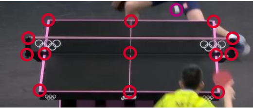
Figure 8 : The 13 table keypoints (red circles) and the ball position (purple circle) are highlighted.
图 8：13 个球台关键点（红色圆圈）和球位置（紫色圆圈）突出显示。
Annotating the spin direction is particularly challenging, as the spin is not directly observable in broadcast footage.
标注旋转方向特别具有挑战性，因为在转播镜头中无法直接观察到旋转。
To infer the spin type, we analyze the paddle’s orientation at the moment of impact.
为了推断旋转类型，我们分析了击球瞬间球拍的方向。
- •
Topspin : If the paddle is angled towards the table, the shot is labeled as topspin.
上旋：若击球时拍面朝球台方向倾斜，则标为上旋。
This is illustrated in Figure 9(a) .
这在图9(a)中示出。
- •
Backspin : If the paddle is angled away from the table, the shot is labeled as backspin.
下旋：若击球时拍面背离球台方向倾斜，则标为下旋。
This is illustrated in Figure 9(b) .
这在图9(b)中示出。
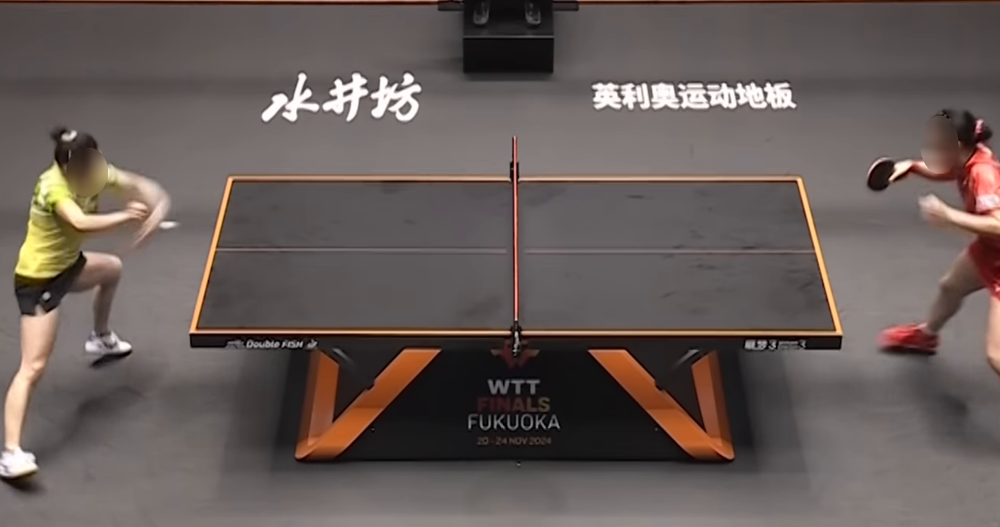
(a) Topspin
(a) 上旋球
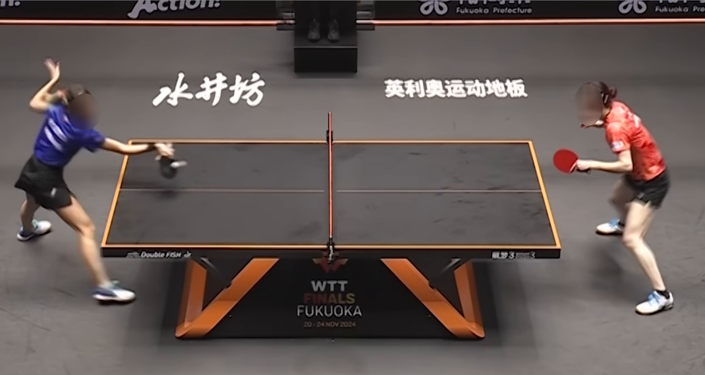
(b) Backspin
(b) 下旋
Figure 9 : Example frames for the annotation of the spin direction.
图 9：旋转方向标注的示例框架。
If the paddle is facing the table (a), the shot is annotated as topspin.
如果球拍面向球台 (a)，则球被标注为上旋球。
If the paddle is facing away from the table (b), the shot is annotated as backspin.
如果球拍背向球台 (b)，则击球将被标注为下旋。
This annotation approach provides a practical method for inferring spin direction despite the limitations of broadcast video data.
尽管转播视频数据存在局限性，但这种标注方法提供了一种推断旋转方向的实用方法。
Appendix C Regressing camera matrices附录 C 回归相机矩阵
Although our method operates in an end-to-end manner without requiring camera calibration as input, the intrinsic and extrinsic camera matrices are necessary for computing the 2D reprojection error.
虽然模型端到端运行且无需将相机标定结果作为输入，但计算二维重投影误差仍需要相机内参和外参矩阵。
For each trajectory, we manually annotate the 13 table keypoints once.
对于每个轨迹，我们手动标注一次 13 个球台关键点。
Since the corresponding 3D world coordinates are known due to standardized table sizes in professional matches, the camera matrices can be estimated by minimizing the reprojection error of these 13 points.
由于专业比赛中标准化的球台尺寸导致相应的3D世界坐标已知，因此可以通过最小化这13个点的重投影误差来估计摄像机矩阵。
However, this regression process is inherently unstable, and even small annotation errors can lead to significant inaccuracies in the estimated camera matrices.
然而，这种回归过程本质上是不稳定的，即使很小的标注错误也可能导致估计的相机矩阵显著不准确。
To mitigate this issue, we employ the RANSAC algorithm [ 16 ] to robustly filter out erroneous annotations.
为了缓解这个问题，我们采用 RANSAC 算法 [16] 来稳健地筛选掉错误的标注。
In each RANSAC iteration, we randomly select six non-planar keypoints and compute an initial estimate of the camera matrices using the Direct Linear Transformation (DLT) algorithm [ 1 ] .
每次 RANSAC 迭代随机选择 6 个非共面关键点，用直接线性变换（DLT）算法 [1] 初步估计相机矩阵。
This initial estimate is then refined using the Broyden-Fletcher-Goldfarb-Shanno (BFGS) optimization algorithm [ 5 ] .
然后使用 Broyden-Fletcher-Goldfarb-Shanno (BFGS) 优化算法 [5] 对该初始估计进行细化。
With the refined matrices, we determine the number of inliers by checking the reprojection error.
利用精炼后的矩阵，我们通过检查重投影误差来确定内点的数量。
A point is classified as an inlier if the reprojected 3D point is within of the corresponding 2D annotation.
如果重投影的 3D 点位于相应 2D 标注的内，则该点被归类为内点。
This procedure is repeated 100 times, and the setting with the highest number of inliers is selected.
此过程重复 100 次，并选择内点数最多的设置。
Using all identified inliers, we compute the final camera matrices by first applying the DLT algorithm and subsequently refining the result with the BFGS optimization.
使用所有已识别的内点，我们首先应用 DLT 算法，然后使用 BFGS 优化来细化结果，从而计算最终的相机矩阵。
The RANSAC-based approach is essential for mitigating the impact of slight errors in the 2D annotations and obtaining accurate camera matrices.
基于 RANSAC 的方法对于减轻 2D 标注中微小错误的影响并获得准确的相机矩阵至关重要。
We highlight that our model, which does not require camera calibration, is very robust to minor errors in the 2D input, highlighting the benefits of implementing an end-to-end approach.
我们强调，我们的模型不需要相机标定，对于 2D 输入中的微小错误非常稳健，这凸显了实施端到端方法的好处。
Appendix D Augmentation Details附录 D 增强细节
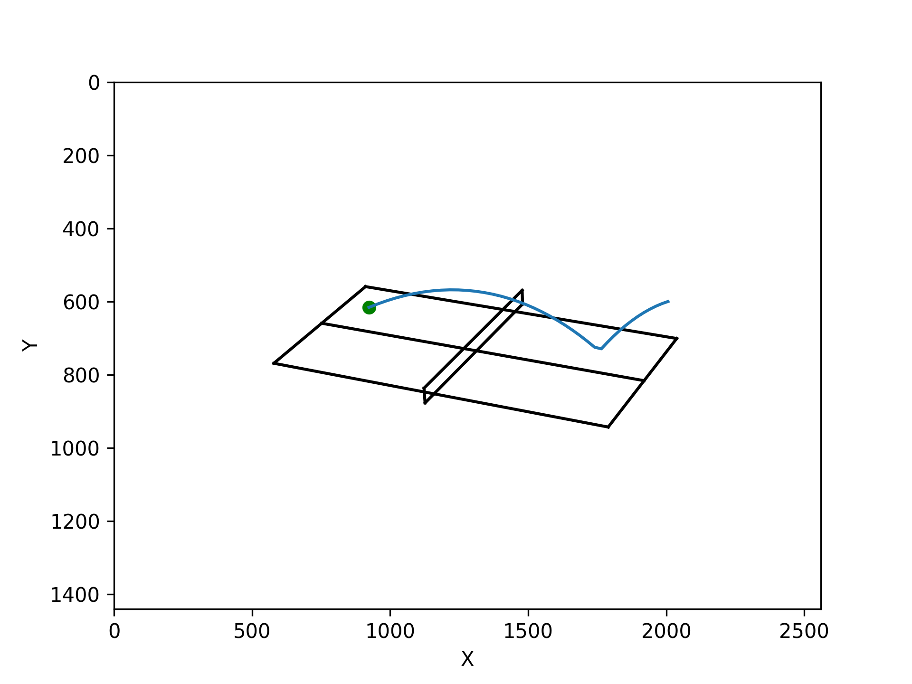
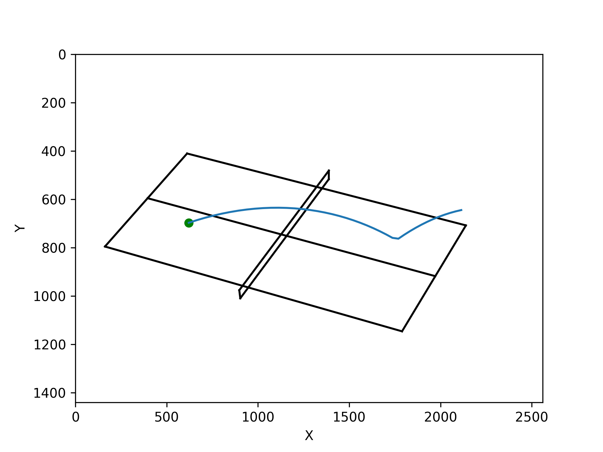
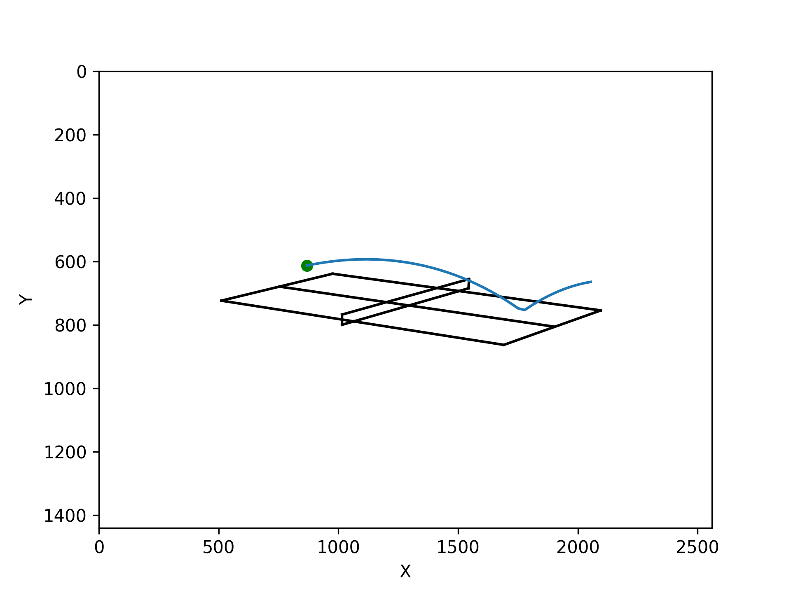
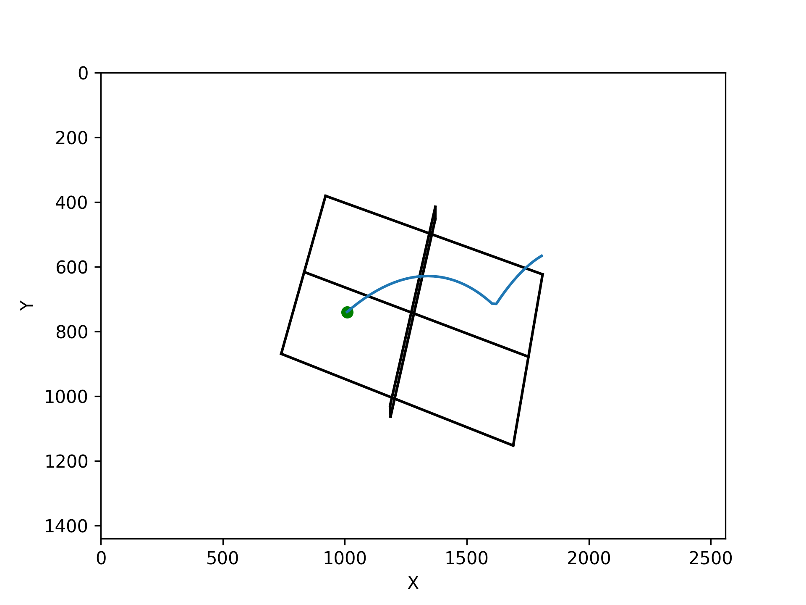
Figure 10 : A trajectory sampled from 4 different camera perspectives.
图 10：从 4 个不同摄像机视角采样的轨迹。
During training, we transform the trajectory with such randomly sampled camera parameters to introduce different viewpoints.
在训练过程中，我们使用这种随机采样的相机参数来转换轨迹以引入不同的视点。
During training, we randomly sample plausible camera parameters to simulate diverse camera perspectives, increasing the diversity of the model inputs and ensuring that the model generalizes well across different viewpoints.
在训练过程中，我们随机采样合理的相机参数来模拟不同的相机视角，增加模型输入的多样性，并确保模型在不同视点之间具有良好的泛化能力。
Examples of trajectories visualized from various sampled camera parameters are shown in Figure 10 .
图 10 显示了根据各种采样相机参数可视化的轨迹示例。
In the synthetic dataset, we do not only store the ball’s 3D position at each time step but also record intermediate positions.
在合成数据集中，我们不仅存储每个时间步的球的 3D 位置，还记录中间位置。
For these intermediate positions, we employ a ”virtual” framerate of , which is ten times higher than the actual framerate.
对于这些中间位置，我们采用的“虚拟”帧速率，它比实际帧速率高十倍。
This allows us to accurately simulate motion blur in a physically consistent manner.
这使我们能够以物理一致的方式准确地模拟运动模糊。
Rather than using the exact ball position at a given timestamp, we randomly select a point within a temporal window around each frame.
我们不是使用给定时间戳的确切球位置，而是在每个帧周围的时间窗口内随机选择一个点。
For the experiments in this paper, we define this window such that the selected point has a timestamp within a maximum deviation of .
对于本文的实验，我们定义此窗口，使得所选点的时间戳在最大偏差内。
Motion blur is applied not only to the 2D ball positions but the 3D ground truth positions are shifted accordingly.
运动模糊不仅应用于 2D 球位置，而且 3D 真值位置也会相应移动。
The sudden end augmentation is designed to simulate scenarios in which the opposing player interferes, leading to an abrupt termination of the trajectory.
突然结束增强旨在模拟对方球员干扰的场景，导致轨迹突然终止。
For each trajectory, we remove a randomly selected number of coordinates at the end, however, we ensure that the trajectory always includes the bounce on the table.
对于每个轨迹，我们在最后删除随机选择数量的坐标，但是，我们确保轨迹始终包含球台上的反弹。
This augmentation is applied with a probability of during training, allowing the model to learn from complete trajectories while also adapting to cases where the ball’s motion is unexpectedly interrupted.
在训练过程中，这种增强以的概率应用，允许模型从完整的轨迹中学习，同时也适应球运动意外中断的情况。
The Gaussian blur augmentation is implemented by introducing random noise to the 2D ball position and the 2D table keypoints.
高斯模糊增强是通过向 2D 球位置和 2D 球台关键点引入随机噪声来实现的。
The noise is sampled from a Gaussian distribution with a standard deviation of pixels in both the - and -directions, effectively simulating annotation inaccuracies.
噪声是从高斯分布中采样的，在和方向上的标准差均为像素，有效地模拟了标注的不准确性。
Appendix E Further Experiments附录 E 进一步实验
This section presents additional experiments that provide deeper insights into the model’s behavior.
本节介绍了其他实验，可以更深入地了解模型的行为。
All experiments are based on the best model, which is described in Section 6.4 .
所有实验均基于最佳模型，如第 6.4 节所述。
It uses the concatenation token embedding method, the connect-stage SPT architecture, and all data augmentations.
它使用拼接token嵌入方法、连接阶段 SPT 架构以及所有数据增强。
E.1 Spin Prediction Coordinate SystemE.1 旋转预测坐标系
| Synthetic合成的 | Real真实 | |||||
| Method方法 | accACC | ROC-AUCROC 曲线下面积（ROC-AUC） | ||||
| world世界 | ||||||
| ball球 | ||||||
Table 5 : Comparison of different spin prediction coordinate systems.
表5：不同旋转预测坐标系的比较。
The best results on the real data are highlighted in bold.
真实数据的最佳结果以粗体突出显示。
In Section 3.2 , we discussed that while the trajectory is analyzed in the world coordinate system, the spin is evaluated in the ball coordinate system.
在3.2节中，我们讨论了在世界坐标系中分析轨迹的同时，在球坐标系中评估旋转。
According to Equation 2 , the predicted spin can be transformed between coordinate systems.
根据等式2，预测的旋转可以在坐标系之间进行变换。
Thus, there are two approaches for predicting the spin:
因此，有两种预测旋转的方法：
- •
The network is trained to predict the spin in the world coordinate system, and the predicted trajectory is used in Equation 2 to transform the spin into the ball coordinate system.
该网络被训练来预测世界坐标系中的旋转，并且在方程 2 中使用预测轨迹将旋转转换到球坐标系中。
- •
The network is trained to directly predict the spin in the ball coordinate system, eliminating the need for any transformation.
该网络经过训练可以直接预测球坐标系中的旋转，无需进行任何转换。
Since the first approach relies on the predicted trajectory for coordinate transformation, it may introduce additional errors.
由于第一种方法依赖于预测轨迹进行坐标变换，因此可能会引入额外的误差。
Conversely, using the same coordinate system for both trajectory and spin could simplify training, as the network does not need to learn the transformation.
相反，对轨迹和旋转使用相同的坐标系可以简化训练，因为网络不需要学习变换。
Table 5 compares both approaches.
表 5 比较了两种方法。
Training the network directly in the ball coordinate system results in slightly better performance across all spin-related metrics.
直接在球坐标系中训练网络会导致所有旋转相关指标的性能稍好一些。
However, trajectory prediction benefits from predicting the spin in the world coordinate system.
然而，轨迹预测受益于预测世界坐标系中的旋转。
Overall, the differences are minor.
总体而言，差异很小。
Choosing the coordinate system depends on whether trajectory accuracy or spin accuracy is more critical for the specific application.
选择坐标系取决于轨迹精度或旋转精度对于特定应用而言更重要。
This allows for flexibility in the model design, enabling it to be tailored to the specific requirements of the task at hand.
这使得模型设计具有灵活性，使其能够根据当前任务的具体要求进行定制。
E.2 Positional EncodingE.2 位置编码
| Synthetic合成的 | Real真实 | |||||
| Method方法 | acc acc | ROC-AUC ROC-AUC | ||||
| rotary旋转式 | ||||||
| added加性位置编码 | ||||||
Table 6 : Comparison of different positional encodings.
表 6：不同位置编码的比较。
The best results on the real data are highlighted in bold.
真实数据的最佳结果以粗体突出显示。
The standard approach for incorporating positional information in transformers is by adding a fixed sinusoidal positional encoding to the token embeddings.
将位置信息合并到Transformer中的标准方法是向token嵌入添加固定的正弦位置编码。
However, our model utilizes a rotary positional encoding, which is commonly used in language models.
然而，我们的模型利用了语言模型中常用的旋转位置编码。
Table 6 compares both methods.
表 6 比较了两种方法。
As the rotary positional encoding achieves better performance across all metrics, we conclude that it is more suitable for our task.
由于旋转位置编码在所有指标上都取得了更好的性能，因此我们得出结论，它更适合我们的任务。
E.3 Loss TargetE.3 损失目标
| Method方法 | Synthetic合成的 | Real真实 | |||||
| acc acc | ROC-AUC ROC-AUC | ||||||
| ✓ | ✓ | ||||||
| ✕ | ✓ | - | - | ||||
| ✓ | ✕ | - | - | - | - | ||
Table 7 : Comparison of joint prediction with individual models for each task. ✓ indicates which loss function is used during training, while ✕ indicates the absence of the specific loss.
表 7：每个任务的联合预测与单独模型的比较。 ✓ 表示训练期间使用哪种损失函数，而 ✕ 表示不存在特定损失。
The best results on the real data are highlighted in bold.
真实数据的最佳结果以粗体突出显示。
Our model is designed to jointly predict both trajectory and spin.
我们的模型旨在联合预测轨迹和旋转。
For training both task, we simply sum the two loss functions in Equation 7 .
为了训练这两个任务，我们只需将方程 7 中的两个损失函数相加即可。
In this section, we examine whether joint prediction is beneficial or if the two tasks should be handled by separate models.
在本节中，我们将研究联合预测是否有益，或者这两个任务是否应该由单独的模型处理。
Table 7 compares joint prediction with separate models.
表 7 将联合预测与单独模型进行了比较。
The results clearly show that joint prediction outperforms the separate models across all metrics.
结果清楚地表明，联合预测在所有指标上都优于单独模型。
This suggests that the network extracts useful information from one task that enhances the other.
这表明网络从一项任务中提取有用的信息来增强另一项任务。
Thus, joint prediction is an effective approach.
因此，联合预测是一种有效的方法。
E.4 Model SizeE.4 模型规模
| Synthetic合成的 | Real真实 | |||||
| Method方法 | acc acc | ROC-AUC ROC-AUC | ||||
| small小 | ||||||
| base基础型 | ||||||
| large大 | ||||||
| huge超大型 | ||||||
Table 8 : Comparison of different model sizes.
表 8：不同模型规模的比较。
The best results on the real data are highlighted in bold.
真实数据的最佳结果以粗体突出显示。
Table 8 compares different model sizes, which are defined in Table 4 .
表 8 比较了表 4 中定义的不同模型尺寸。
All models demonstrate good performance in spin prediction.
所有模型在旋转预测方面都表现出良好的性能。
However, increasing the model size improves trajectory prediction accuracy.
然而，增加模型大小可以提高轨迹预测的准确性。
Additionally, the spin prediction performance of the largest model is slightly worse than that of the other models, possibly due to overfitting.
此外，最大模型的旋转预测性能比其他模型稍差，可能是由于过度拟合。
Therefore, we identify the large model as the best compromise between spin prediction and trajectory prediction.
因此，我们将大模型确定为旋转预测和轨迹预测之间的最佳折衷方案。
Appendix F Reproducibility and Open Resources附录 F 可复现性与开放资源
To facilitate reproducibility and further research, we provide the following resources:
为了促进重现性和进一步研究，我们提供以下资源：
- •
Synthetic trajectories used for training.
用于训练的合成轨迹。
- •
Annotations for the real-world dataset.
真实世界数据集的标注。
- •
Trained model weights.
训练好的模型权重。
- •
Source code for both training and inference.
用于训练和推理的源代码。
All resources are publicly available at https://kiedani.github.io/CVPRW2025/ .
所有资源均可在 https://kiedani.github.io/CVPRW2025/ 上公开获取。